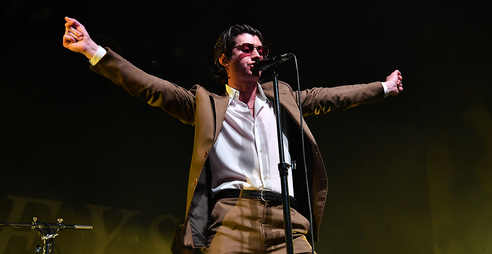

Admiro a Alex Turner porque considero que es una persona increíblemente talentosa que ha sabido evolucionar sin tener miedo al cambio. Es un artista versátil y se me hace un escritor y compositor increíble. Su trabajo con Arctic Monkeys y The Last Shadow Puppets demuestra una gran capacidad para reinventarse y crear música que sigue conectando con las personas a lo largo de los años.
